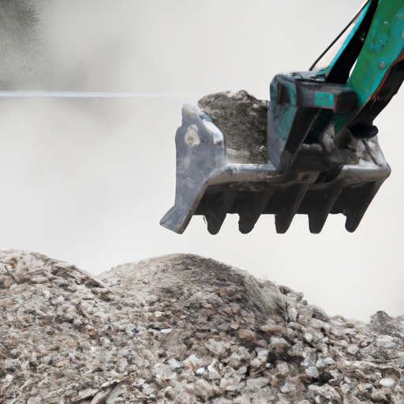
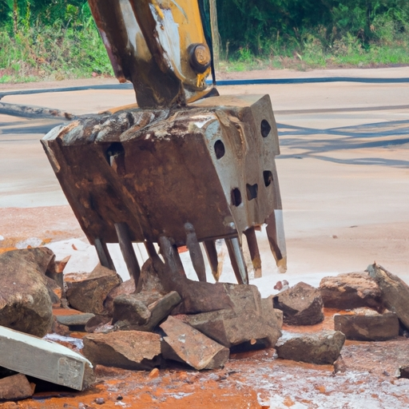
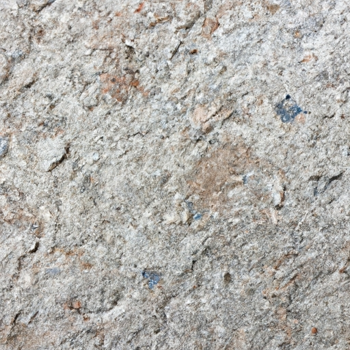
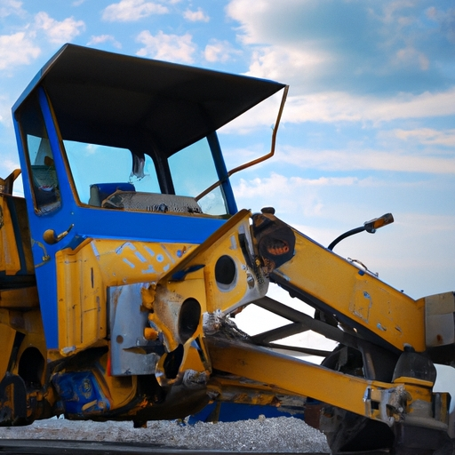
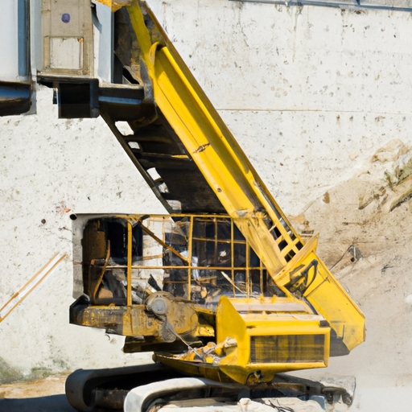

News
Portable Concrete Crusher
Portable Concrete Crusher
Types of portable concrete crushers
Benefits of using a portable concrete crusher
Considerations when choosing a portable concrete crusher
Maintenance tips for portable concrete crushers
Environmental impact of using portable concrete crushers
Types of portable concrete crushers
Types of portable concrete crushers
Jaw crushers
Impact crushers
Cone crushers
Mobile vs stationary crushers
Compact vs fullsize crushers
Benefits of using a portable concrete crusher
Benefits of using a portable concrete crusher
Increased efficiency in construction projects
Cost savings on transportation and disposal of materials
Ability to recycle onsite materials
Versatility in various job sites
Reduced environmental impact compared to traditional methods
Considerations when choosing a portable concrete crusher
Considerations when choosing a portable concrete crusher
Size and weight limitations
Power source options electric vs diesel
Crushing capacity and output size requirements
Mobility features wheels tracks
Safety features and compliance with regulations
Maintenance tips for portable concrete crushers
Maintenance tips for portable concrete crushers
Regular inspections and cleaning
Lubrication of moving parts
Monitoring wear parts for replacement
Proper storage when not in use
Training operators on proper usage and maintenance techniques
About Us
Contact Us
GrinderCrusherScreen
What is a portable concrete crusher and how does it work?
Sep 14, 2024
A portable concrete crusher is a machine used to crush large chunks of concrete into smaller pieces that can be used for various construction projects.. These crushers are often used on construction sites where it is not feasible to bring in large stationary crushers.

What are the benefits of using a portable concrete crusher for construction projects?
Sep 14, 2024
Portable concrete crushers offer numerous benefits for construction projects, especially when it comes to working in remote or confined spaces where traditional crushers may not fit.. One of the key advantages of using a portable crusher is its flexibility.
How to Easily Crush Concrete Anywhere with Our Portable Crusher
Sep 14, 2024
Concrete crushing is a crucial step in many construction and demolition projects, and having the right equipment can make all the difference.. Our portable crusher has been used in numerous successful projects, allowing contractors to easily crush concrete anywhere they need to. One example of a successful concrete crushing project using our portable crusher was on a job site in a busy urban area.
Discover the Ultimate Solution for Crushing Concrete On-the-Go
Sep 14, 2024
When it comes to crushing concrete on-the-go, traditional methods can be time-consuming and costly.. However, there are now more efficient solutions available that can save both time and money. One of the biggest advantages of using modern concrete crushing equipment is the significant cost savings it offers.
Advantages and disadvantages of using portable concrete crushers
Sep 14, 2024
When it comes to using portable concrete crushers, one of the main advantages is their ability to easily crush and recycle concrete on-site.. This can save time and money by eliminating the need to transport materials to a separate location for processing.

How to choose the right portable concrete crusher for your project
Sep 14, 2024
When it comes to choosing the right portable concrete crusher for your project, there are a few key factors to consider.. One of the most important things to keep in mind is ensuring compatibility with your specific project requirements and site conditions. Before making a decision, it's essential to assess the scope of your project and determine what type of crusher will best suit your needs.

Tips for maximizing the efficiency and productivity of a portable concrete crusher
Sep 14, 2024
When it comes to getting the most out of your portable concrete crusher, regular cleaning and maintenance are key.. Implementing a schedule for these tasks can significantly prolong the lifespan of your equipment and ensure it continues to operate at peak efficiency. Cleaning is important because a buildup of debris or material residue can cause blockages and reduce the crusher's effectiveness.

Environmental impact of using portable concrete crushers
Sep 14, 2024
Waste generation and disposal challenges associated with portable concrete crushers are important considerations when discussing the environmental impact of using these machines.. These crushers are used to break down large chunks of concrete into smaller pieces, which can then be recycled or disposed of properly.

Case studies showcasing successful projects using portable concrete crushers
Sep 14, 2024
Portable concrete crushers have become an essential tool in various industries due to their numerous benefits.. These versatile machines are designed to crush concrete on-site, saving time and money for businesses across the globe. One of the main advantages of using portable concrete crushers is their mobility.